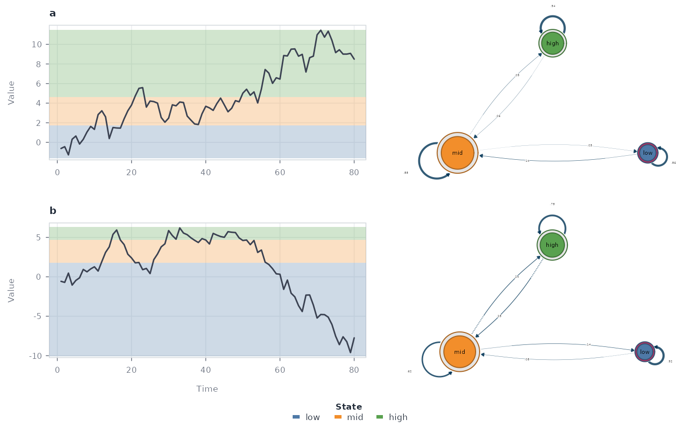
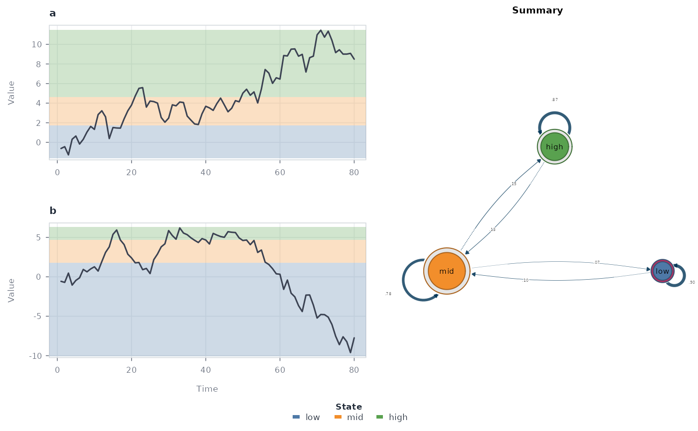
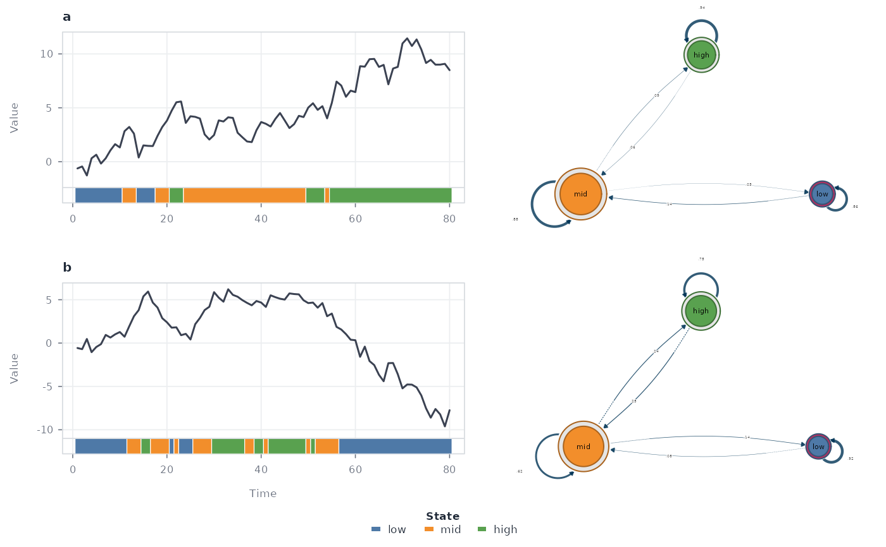
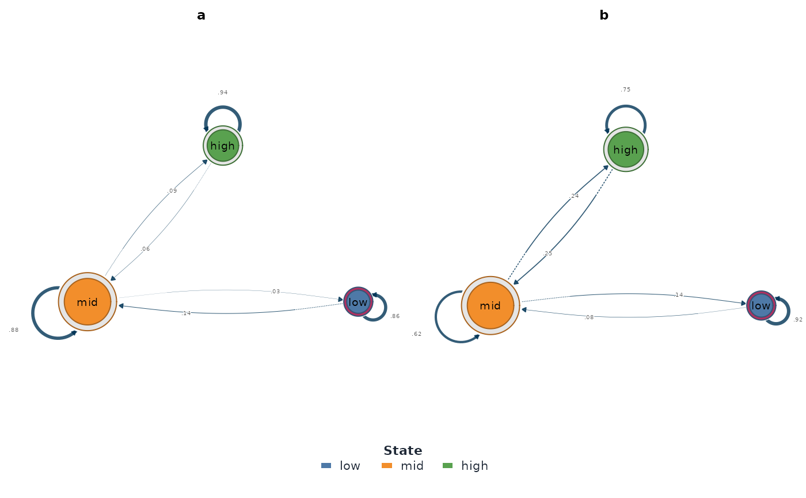

Combined views of a ts_tna()-family result. type = "combined"
(default) places each source series — with optional state shading
and/or a classification ribbon — beside a transition network on the
same row. With network = "per_series" (default) every row pairs a
series with its own network (rebuilt via series_networks(), so
all networks share the same node set and are directly comparable);
network = "summary" draws the pooled model instead, spanning all
series rows and titled "Summary". One state colour mapping ties the
shading, ribbons, and network nodes together. type = "network" draws
only the network(s) — a row of per-series networks or the single
summary; type = "series" only the series panels. Every combination
of overlay (shaded or not) and ribbon is available.
Usage
# S3 method for class 'ts_tna'
plot(
x,
type = c("combined", "network", "series"),
series = NULL,
max_series = 3L,
network = c("per_series", "summary"),
overlay = c("horizontal", "vertical", "none"),
ribbon = FALSE,
points = FALSE,
node_size = c("instrength", "outstrength", "strength"),
node_scale = 1,
network_width = 0.85,
show_weights = TRUE,
alpha = 0.28,
line_color = "#3B4252",
line_width = 1.5,
point_size = 0.9,
strip_height = 0.09,
palette = NULL,
legend = TRUE,
xlab = "Time",
ylab = "Value",
cex = 1,
grid = TRUE,
background = "#FFFFFF",
...
)Arguments
- x
A
ts_tnaresult fromts_tna(),ts_ftna(),ts_cna(), orts_atna().- type
"combined","network", or"series".- series
Optional series IDs to draw (default: up to
max_series).- max_series
Maximum number of series panels (default
3).- network
Which network(s) to draw:
"per_series"(default) — one network per series, each built from that series' own transitions — or"summary"— the single pooled model across all series.- overlay
Series shading:
"horizontal"(default),"vertical", or"none".- ribbon
Whether to run the state strip under each series panel.
- points
Whether to draw state-coloured observation points.
- node_size
Node sizing rule:
"instrength"(default),"outstrength", or"strength"— passed to cograph asscale_nodes_by(self-loops excluded from the centrality).- node_scale
Multiplier for cograph's node size range (
node_size_range = c(7, 14) * node_scale).- network_width
Width of the network column relative to the series column (default
0.85); combined view only.- show_weights
Whether to print edge weights on the network.
- alpha
Shading opacity.
- line_color, line_width, point_size
Series styling.
- strip_height
Ribbon strip height as a fraction of each panel.
- palette
State colours (preset name, named vector, or vector).
- legend
Whether to draw the state legend row.
- xlab, ylab
Series axis titles.
- cex
Global text size multiplier.
- grid
Whether to draw the background grid.
- background
Panel background colour.
- ...
Forwarded to
cograph::splot()for the network panel (e.g.scale_nodes_by,node_size_range,scale_nodes_scale,edge_color); user values override the defaults set here.
Details
Network panels are rendered exclusively by
cograph::splot() — the full TNA style with self-loops and probability
labels — with node fills matching the state shading and nodes sized by
cograph's native centrality scaling (scale_nodes_by = "instrength" by
default, with loops = FALSE), so heavily-entered states read as larger
and self-transitions do not drown the between-state structure; pass
scale_nodes_by = list("instrength", loops = TRUE) through ... to
include self-transitions. "outstrength" and "strength"
(total) are alternatives, and ... is forwarded to cograph::splot()
for full control (anything you set there overrides these defaults).
show_weights controls cograph's edge labels.
Examples
set.seed(1)
series <- list(a = cumsum(rnorm(80)), b = cumsum(rnorm(80)))
network <- ts_tna(series, n_states = 3, labels = c("low", "mid", "high"))
plot(network)

plot(network, network = "summary")

plot(network, ribbon = TRUE, overlay = "none")

plot(network, "network")
